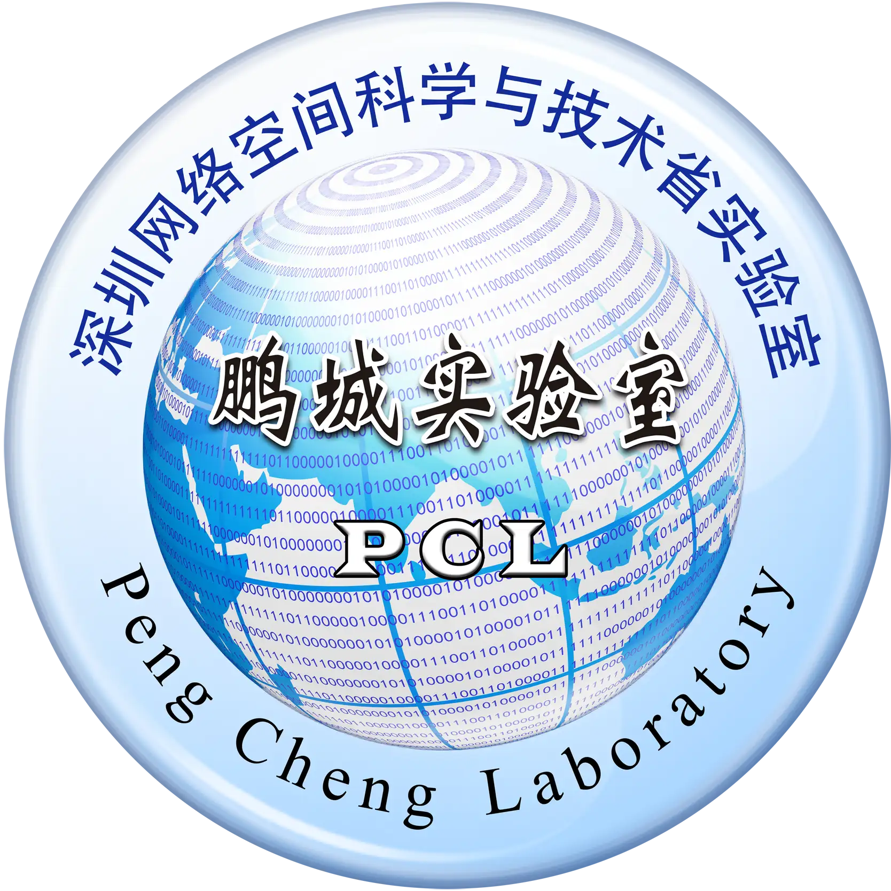

👋 About MeI joined Ant Group as a researcher through the Ant Star Plan-A Program, where I focus on multimodal large language models with advanced agentic reasoning and interactive capabilities. I obtained Ph.D degree at Shanghai Jiao Tong University (SJTU) , advised by Prof. Chao Ma . Previously, I worked as a researcher at Tencent from 2021 to 2022.
I received my M.S. degree from the University of Chinese Academy of Sciences (UCAS) and the Institute of Computing Technology (ICT), Chinese Academy of Sciences, in 2021, under the supervision of Prof. Hu Han , Prof. Shiguang Shan , and Prof. Xilin Chen .
I have also collaborated closely with Dr. Zhongdao Wang , Dr. Pin Tang , Dr. Xiangxuan Ren , Dr. Jilai Zheng, and Dr. Hao Lu .
Recently, my research focuses on Long-Horizon Reasoning and Interaction for Multimodal Agents. My current interests include:
Agentic Multimodal Large Language Models Vison-Language-Action Models World Model
🔥 News
2026.06 Two papers on VLA and 3DGS are accepted by ECCV 2026 .
2026.03 One paper on world model is accepted by ICME 2026 (Oral) .
2026.02 Two papers on VLM and VLA are accepted by CVPR 2026 .
2025.12 One paper on 3D perception is accepted by IEEE TIP .
2024.12 One paper on 3D object detection for autonomous driving is accepted by AAAI 2025 .
2024.07 Two papers on 3D occupancy prediction for autonomous driving are accepted by ECCV 2024 .
Earlier news (2019–2024)
2024.02 One paper on 3D occupancy prediction for autonomous driving is accepted by CVPR 2024 .
2023.11 We rank first on the nuScenes occupancy prediction leaderboard (MetaGOD).
2022.08 I will pursue my Ph.D. degree at Shanghai Jiao Tong University.
2021.10 We are invited to give a talk in Valse Webinar
[video] .
2021.06 I will work at Tencent as an algorithm researcher.
2020.06 One paper on cross-domain face presentation attack detection (PAD) is accepted by IEEE T-IFS.
2020.04 We receive the 11th place (Top 1%) of Alibaba Tianchi Object Detection challenge.
2020.02 One paper on cross-domain face presentation attack detection (PAD) is accepted by CVPR 2020.
2019.04 One paper on multi-modal face anti-spoofing is accepted by CVPR 2019 workshop.
2019.03 One paper on cross-domain face presentation attack detection (PAD) is accepted by ICB 2019.
📝 PublicationsPublications by research area · Google Scholar ↗
Generative AI, World Models & Multimodal Learning
ECCV 2026
Targeted Structure Completion for Sparse-View 3D Reconstruction in Autonomous Driving
Guoqing Wang , Pin Tang, Xiangxuan Ren, Liping Hou, Chao Ma
European Conference on Computer Vision (ECCV), 2026
ECCV 2026
PixelPilot: Scalable Vision-Language-Action Models for End-to-End Autonomous Driving
Pin Tang, Guoqing Wang , Xiangxuan Ren, Zhongdao Wang, Guodongfang Zhao, Bailan Feng, Chao Ma
European Conference on Computer Vision (ECCV), 2026
ICME 2026 Oral
Guoqing Wang , Pin Tang, Xiangxuan Ren, Chao Ma
IEEE International Conference on Multimedia and Expo (ICME), 2026
CVPR Findings 2026
Guoqing Wang , Pin Tang, Xiangxuan Ren, Guodongfang Zhao, Bailan Feng, Chao Ma
Findings of IEEE Conference on Computer Vision and Pattern Recognition (CVPR), 2026
CVPR 2026
Xiangxuan Ren, Zhongdao Wang, Liping Hou, Pin Tang, Guoqing Wang , Chao Ma
IEEE Conference on Computer Vision and Pattern Recognition (CVPR), 2026
3D Perception & Autonomous Driving
IEEE TIP 2026
Guoqing Wang , Chao Ma, Xiaokang Yang
IEEE Transactions on Image Processing (TIP), 2026
AAAI 2025
Hao Lu, Yunpeng Zhang, Guoqing Wang , Qing Lian, Dalong Du, YingCong Chen
Annual AAAI Conference on Artificial Intelligence (AAAI), 2025
ECCV 2024
Guoqing Wang , Zhongdao Wang, Pin Tang, Jilai Zheng, Xiangxuan Ren, Bailan Feng, Chao Ma
European Conference on Computer Vision (ECCV), 2024
ECCV 2024
Jilai Zheng, Pin Tang, Zhongdao Wang, Guoqing Wang , Xiangxuan Ren, Bailan Feng, Chao Ma
European Conference on Computer Vision (ECCV), 2024
CVPR 2024
Pin Tang, Zhongdao Wang, Guoqing Wang , Jilai Zheng, Xiangxuan Ren, Bailan Feng, Chao Ma
IEEE Conference on Computer Vision and Pattern Recognition (CVPR), 2024
Representation Learning & Face Anti-Spoofing
IEEE TIFS 2021
Guoqing Wang , Hu Han, Shiguang Shan, Xilin Chen
IEEE Transactions on Information Forensics and Security (TIFS), 2021
CVPR 2020
Guoqing Wang , Hu Han, Shiguang Shan, Xilin Chen
IEEE Conference on Computer Vision and Pattern Recognition (CVPR), 2020
CVPRW 2019
Guoqing Wang , Hu Han, Shiguang Shan, Xilin Chen
IEEE Conference on Computer Vision and Pattern Recognition (CVPR) workshop, 2019
ICB 2019
Guoqing Wang , Hu Han, Shiguang Shan, Xilin Chen
IAPR International Conference on Biometrics (ICB), 2019
📑 Preprints
Preprint 2024
Hao Lu, Jiaqi Tang, Xinli Xu, Xu Cao, Yunpeng Zhang, Guoqing Wang , Dalong Du, Hao Chen, Yingcong Chen
arxiv:2404.06700
🎓 Education
Shanghai Jiao Tong University September 2022 – Present
Ph.D. in Computer Science and Technology
Department of Computer Science and Engineering
University of Chinese Academy of Sciences August 2018 – July 2021
M.S. in Computer Technology
Institute of Computing Technology, Chinese Academy of Sciences
💻 Experience
Huawei · Noah’s Ark Lab Research Intern · December 2023 – Present · Shanghai, China
Autonomous Driving, Generative AI, Vision-Language Models
Tencent Researcher · July 2021 – August 2022 · Beijing, China
Video Understanding and Retrieval, 2D Perception

Peng Cheng Laboratory Research Intern · September 2020 – January 2021 · Shenzhen, China
Domain Generalization, Face Recognition
🏅 Honors & Awards
Tencent Outstanding Contributor (Top 10%), 2022 H1Tencent Good+ Contributor (Top 10%), 2021 H2Nomination for the Chinese Academy of Sciences President Award, 2020
Alibaba Tianchi Object Detection Challenge — Top 1% (11th / 2,990) , 2020
CVPR 2020 Face PAD Challenge — 9th / 46, 2020
CVPR 2019 Multi-modal Face PAD Challenge — 9th / 553, 2019
Merit Student, UCAS, 2020
📚 Academic ServicesConference Reviewer CVPR, ICCV, ECCV, AAAI, IJCB, ICPR, IScIDE
Journal Reviewer IEEE TIP, IEEE TIFS, IEEE TCSVT, IEEE TAI, Pattern Recognition, ACM TIST, Information Fusion, IEEE Access